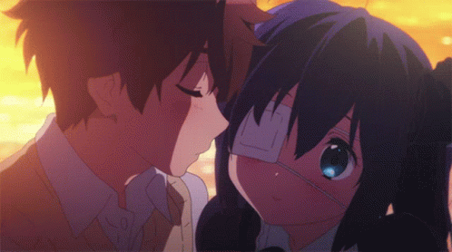

Jeśli tu zawitałaś to najprawdo podobniej znowu męczą mi cię myśli, pewnie jest w twojej główce tak wiele rzeczy naraz że nie jesteś w stanie za nimi nadążyć. Pewnie Głowka wmawia ci naprawde złe rzeczy które tak naprawde nie mają i nigdy nie będą miały odzwierciedlenia w rzeczywistości. Stworzyłem tą stronke właśnie by pomóc ci z tego typu problemami. Będziesz zawsze mogła spytać Konraś o rade, o jego zdanie odnośnie danego problemu nawet jeśli nie będę wtedy przy tobie! Jak możesz zauważyć chcę się tobą zaopiekować nawet kiedy nie ma mnie obok.
 Powrót